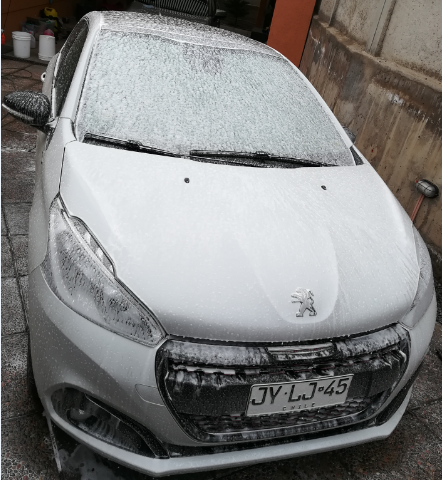

CarWash Estándar
Servicio de Lavado frecuente para mantener tu vehículo siempre reluciente.
Incluye:
Lavado Exterior, baño Snow Foam.
Lavado entrepuertas, guardabarros, cepillado de llantas y neumáticos.
Aspirado y limpieza interior.
Hidratación de plásticos interiores y exteriores, renovador de neumáticos.
Encerado.
Duración del servicio 2 Horas